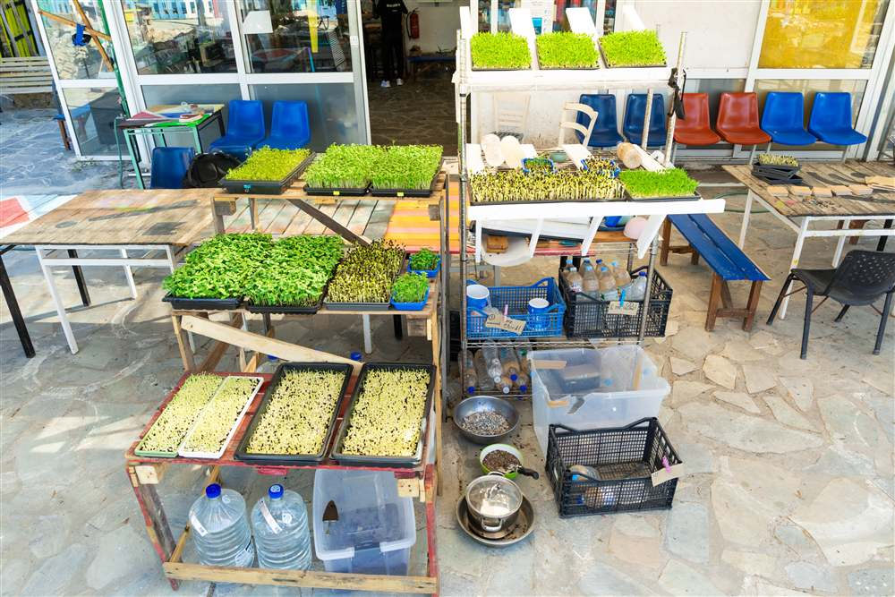
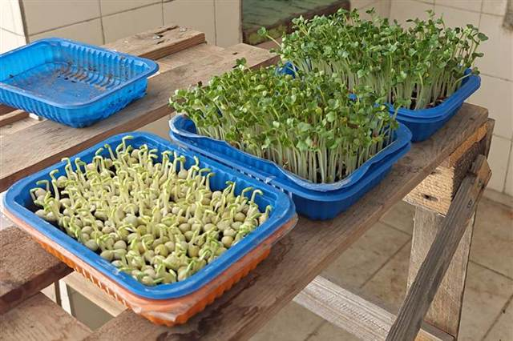
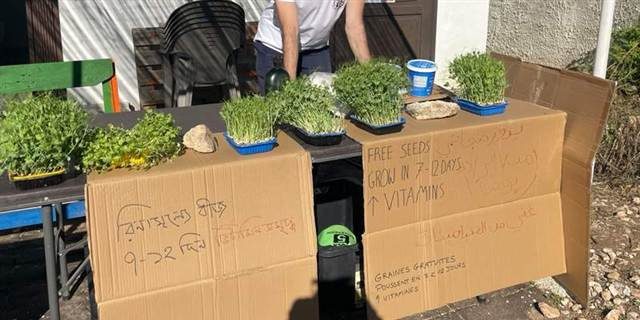

Greece · 2025 to now
Microgreens farming for refugee communities
2025 pilot
Background
In early 2025, Zervou Camp held over 3,000 asylum seekers in conditions that major NGOs have described as prison-like. Residents receive no cash assistance, and through interviews we found they received virtually no fruit or vegetables. 77.8% of camp residents we spoke to considered the food 'not healthy' or 'not fresh', and a quarter of this group reported falling ill because of the food.
In our research, microgreens looked promising because of their nutrient density (averaging 5x more vitamins and carotenoids than mature vegetables, per gram) and ability to go from seed to harvest in 1–2 weeks. We felt this was worth trialling.
Community farm pilot

Working with selfm.aid, a vocational training organisation operating outside of Zervou Camp, we built and ran a low-tech microgreens farm from July to September 2025 to test four questions: could it be cost-effective, could it produce under heat and water scarcity, could community members run it, and would people want to eat it.
What it produced
- 2,300 plates supplemented over 59 days, from 5.3m² of shelf space
- $0.06 per person for 2 supplemented plates per day — roughly $1.80 a month* *Our cost figures exclude one-time set-up costs of about $407, and assume water and labour are free.
- 74–94% as productive as commercial farms, at temperatures up to 43°C
- 6 community members trained; one went on to start a microgreens set-up for another organisation
- 92.6% of those interviewed wanted microgreens to stay in their diet
Limitations
The pilot's estimate of around 56 DALYs averted per $100,000 is higher than cash transfers, but lower than staple food fortification, at around 670.
Microgreens address micronutrients, not calories. The micronutrients our crops were high in were Vitamin C, E, and K. They won't address hunger, but they can help where there is a dearth of fresh fruit and vegetables.
Germination is a fragile process, and while manageable, the farm required troubleshooting for issues including heat, rodents, and mould.
Our interviews were small: 27 people, 85% of them men.
Read the pilot report → Read the toolkit →
Post-pilot handover
At the end of the pilot period, the set-up was handed over to La Maison, a grassroots organisation serving meals to the camp community. La Maison would integrate microgreens as a supplement in the meals that they served. It ran successfully for several months, before they decided to close the programme for manpower reasons in 2026.
2026 pivot
Home-growing programme
Despite the community farm halting operations, we felt that the evidence for the programme justified giving this one more big swing. We determined that by massively simplifying the process and restricting to fool-proof crops, we could make it possible for community members to grow microgreens at home with no supervision.
Additionally, a home-growing programme had several advantages. It would:
- give people more autonomy and control over their diets;
- allow individuals to reap the well-evidenced mental health benefits of gardening, which is particularly important in camps where idleness is a challenge;
- be cheap to run: aside from the seeds it utilises only recycled materials;
- be easy for other organisations to implement without significant complexity.

We made two instructional videos for radish and pea microgreens and released them in the seven languages we anticipated would be in demand from community members. In the videos, we show refugees how to grow microgreens using the disposable plastic food boxes handed out in the camps every day.

With the tutorials ready, we enlisted the help of La Maison to distribute the seeds freely to camp residents. We gave out 64 sets of seed over the first two afternoons of distributions. La Maison now distributes the seeds once per week alongside its regular programmes. Gardening isn't effortless, and thus success for us would be more seeds going out each week: an indicator of buy-in from the community.
An invitation to grassroots organisations
We are looking to bring this programme to more camps across Greece. Our conversations suggest that poor diets are common across Greek camps, and we want more refugees to have healthy alternatives to the food that is catered.
Interested organisations can reach out to us to receive up to 4kg of seed to pilot this, enough to sow about 390 boxes of crops. Depending on the success of these pilots and interest generated, we will negotiate with seed suppliers for better prices going forward, and look for funding avenues to make this programme sustainable.
Read the invitation to pilot →
